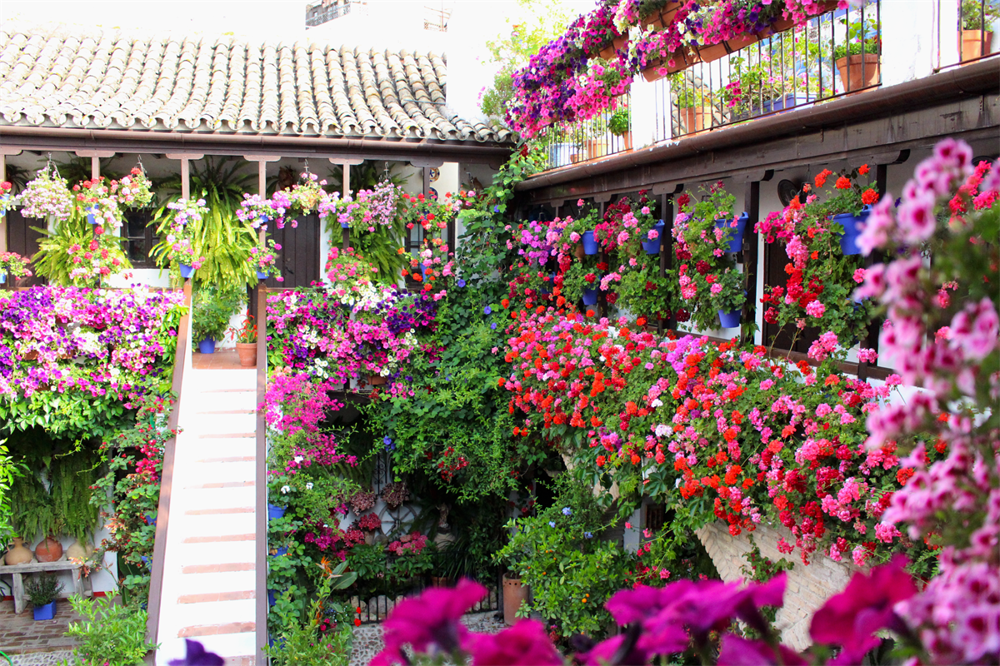

Los patios de Córdoba

Los Patios de Córdoba viven su máximo esplendor en la primera quincena de mayo cada año con el Festival de los Patios Cordobeses (Patrimonio de la Humanidad), los propietarios de todos los patios participantes en el concurso abren sus patios y el público puede visitarlos. Lo que muchos no saben es que es posible visitar patios de Córdoba durante todo el año y casi diríamos que fuera de las fechas del Festival es cuando mejor se pueden conocer, porque no se encuentran tan saturados de público. Así, si decides venir en cualquier otra temporada, encontrarás múltiples opciones para visitarlos:.3
Los elementos de borde que definen la delimitación del conjunto histórico de Córdoba están formados por las vías de comunicación que coinciden con la antigua muralla, lo que en gran medida ha salvaguardado el centro histórico de los ensanches urbanísticos de finales del siglo XIX y principios del XX, pues estos transcurren por el perímetro del mismo (avenida Conde Vallellano, Paseo de la Victoria, Ronda de los Tejares, avenida de las Ollerías), creándose así un anillo de espacios libres que protege al Conjunto Histórico de Córdoba.
El poblamiento de Córdoba se remonta a la Edad del Bronce, si bien la fundación de la ciudad tiene lugar a mediados del siglo II a. C. por el pretor Claudio Marcelo, convirtiéndose en capital de la Hispania Ulterior y más tarde de la Bética, llegando a tomar el título de Colonia Patricia, lo que pone de manifiesto la prosperidad y prestigio de que ya entonces gozaba. Tras la caída del Imperio romano de Occidente, la ciudad cayó bajo poder del Imperio bizantino hasta que fue conquistada en el año 572 por el rey visigodo Leovigildo. Hacia finales del siglo VII, las luchas civiles y las intrigas políticas debilitaron el poder visigodo, lo que facilitó la penetración de los musulmanes en la península en el año 711 y la rápida conquista del país, que permanecería bajo la dependencia del Califato de Damasco. En el año 717 Córdoba se convirtió por sus características geográficas y sus posibilidades estratégicas en capital de al-Ándalus; en 756 el príncipe omeya Abd al-Rahman I logra erigirse con el poder en al-Ándalus y establece el Emirato Independiente de Córdoba; en 929 Abd al-Rahman III proclama el Califato de Córdoba. La ciudad alcanza entonces el cenit de su esplendor.
De cada período histórico aquí reseñado se conservan importantes testimonios materiales en la ciudad. -Palacio de Viana: En la plaza de Don Gome se levanta este majestuoso palacio, cuyas dependencias se desarrollan en torno a doce magníficos patios y un fantástico jardín. Las distintas especies florales decoran y perfuman cada rincón del ampuloso museo. La última marquesa de Viana, Sofía de Lancaster, supo mantener el exquisito origen de este palacio del siglo XIV.